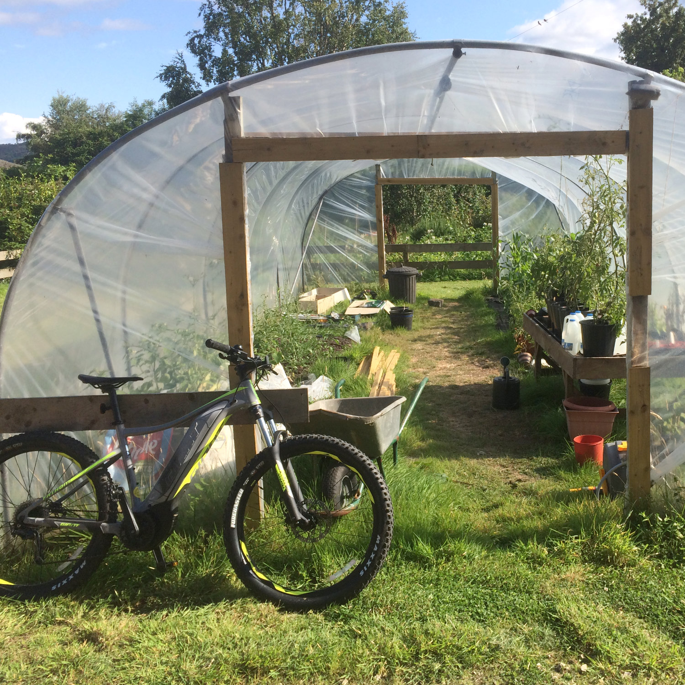

The model was a Mountain Bike by Giant, and although I would be mostly using the bike for transit along Arran’s paved roads, having a mountain bike turned out to be for the best. Let’s just say those oh-so-notorious potholes make the island’s roads a bit like a mountain bike course anyway...
I did have to reign in my ambition just a little, and alas did not get to the top of Goatfell this time round. But of course, how could I resist this opportunity to visit some of my favourite places on The Arran Green Map.
Day One
Lamlash > Kildonan > Whiting Bay > Lamlash > Brodick > Cladach > Lamlash
Total Distance: 30 miles
Battery Used: 80%
First up, how could I go anywhere else but Woodside Arran CIC in Kildonan. I am a director at Woodside Arran so the bike eliminated one of my more regular inter village commutes. I started out from my house in Lamlash and headed south, it only took me about 30 minutes from Lamlash to Kildonan, (where it would be over 2 hours walking, or a commute on the bus would take an hour including walking and waiting at bus stops) I breezed up the hills out of Lamlash towards the heights (the big long straight road between Lamlash and Whiting Bay), and from Largybeg up to the farm at High Kildonan through Dippen.
The Bike At Woodside Arran.After buying some local produce from the Farm Shop, I flew back down the hill through Dippen, before cruising through the picturesque seafront of the village where I grew up, Whiting Bay. And of course, the first stop was The Eco Savvy Community Shop. I have been volunteering here regularly for the last two years, and since being founded in 2014 the shop has done so much work to stop stuff from going to landfill, encouraging recycling and upcycling. More recently we have introduced a line of eco products to offer alternatives to household products, cosmetics and more.
The Bike At Eco Savvy Community Shop in Whiting Bay.Having perused the treasure trove of stuff, I then trundled along Whiting Bay to visit The Bay Kitchen and Stores in order to do some more grocery shopping there. This excellent shop is dedicated to sourcing local produce wherever possible and they also have a wide range of organic and high quality products. With a rucksack full of local produce, it was back north to Lamlash over the heights.
The Bike At The Bay Kitchen and Stores.Eager to name drop all my favourite places in the first day of this report, The Octopus Centre in Lamlash was the next stop. COAST have been instrumental in protecting the seas around Arran, having achieved Scotland’s first no take zone in 2008, and also the South Arran MPA in 2014. This new Marine Discovery Centre is the place to go to learn all about marine conservation on Arran.
The Bike At The Octopus Centre.There was no way I could resist the temptation of going onwards to everybody’s favourite village Brodick from here. From the turning point down towards Clauchlands up and over the hill to Brodick only took about 10 minutes, the bike made the hills alongside Lamlash golf course about the same effort as pedalling along a flat road.
The Bike Up The Top Of The Brodick Lamlash Hill.Although I live in Lamlash, I spend quite a lot of time in Brodick, as it is the other village where I grew up, and my dear Mum still lives there. In addition, I volunteer at the Cladach Community Garden. By now you may have gathered that I am a bit obsessed with growing food locally, and over the last couple of years this garden has been an amazing opportunity to learn about growing food. We are an informal group of volunteers, and the garden is part of Brodick Castle Gardens - the National Trust kindly made this plot of land available to the community about ten years ago and various groups of volunteers have come and gone in that time.
 The Bike At Cladach Community Garden.So the bike made it so easy to do my gardening then speed back to Lamlash. In only one day I had managed to visit most of my regular spots in one go and have time left over. I could get used to this. With still a little juice left on the battery, I went as far up the Ross Road as possible before freewheeling back home to charge her up again.
Day Two
Lamlash > Brodick
Total Distance: 4.5 miles
Battery Used: 10%
The exhilaration of the first day behind me, the ebike was now to make my regular commute from Lamlash to Brodick much easier. However my second day coincided with being a very miserably rainy day indeed, and there was widespread flooding across the island. I did manage to get out to take the bike to Brodick, but got absolutely soaked coming down the Brodick hill. Waterproofs are a must for taking it out on days like these.
Day Three
Brodick > Sannox > Lamlash
Total Distance: 21 miles
Battery Used: 80%
On the Saturday morning, with the weather looking good for Brodick Highland Games day, I dropped off the bike with the EcoSavvy team at the games before consigning myself to an afternoon of just being propelled by my own feet. The Ecosavvy team needed the bike it to run trials for all the punters at the games, and they had loads of people trying it out up that hill towards the Ormidale.
As soon as I went to collect the bike again it was off to North Sannox. This wasn’t a totally spontaneous choice of destination, as much as I do think North Sannox is just one of the most beautiful spots on Arran and well worthy of a totally off-the-cuff visit. No, the amazing Chai Caddy had set up for the month of August, so the now increasingly indispensable bike gave me the chance to go and sample their delicious menu and a cup of Chai Tea. Not many hills between Brodick and Sannox, but the bike gave me that welcome boost as you go up the hill towards the Boguille and the turn off to the right down to the campsite, and likewise in boosted me up the hill on the way out again. I was beginning to very much enjoy the freedom the bike was giving me to go for jaunts like this.
The Bike At The Chai Caddy, North Sannox.Day Four
Lamlash > Brodick > Cladach > Brodick > Glencloy > Lamlash
Total Distance: 15 miles
Battery Used: 50%
That community garden doesn’t tend to itself so it was back to Cladach for me. The aim is to get down there at least once a day during the summer to water the tomatoes and check on the sweetcorn in the polytunnel, so the bike made this much easier.
I thought I would mix things up a bit today and went back to Lamlash via Glencloy, which is an exciting route up through the Kilmichael forest, and on to a forestry road that takes you to Cnoc Na Dail carpark and back to the road to Lamlash. There are so many off the beaten track routes where you can avoid traffic, you can definitely have a varied routine.
Day Five
Lamlash > Dunfionn > Brodick > Cladach > Lamlash
Total Distance: 15 miles
Battery Used: 60%
Always on the lookout for new ways to travel between Brodick and Lamlash, this time I took my now trusty old companion the ebike up to possibly my favourite spot on the island - Dunfionn. I met the first real challenge for the bike going up through Clauchlands Farm. The hill up here is really steep and the bike couldn’t handle it, or I couldn’t get enough acceleration to see it up and over the hill, so I had to go for the old tested method of getting off the bike and pushing. Unprecedented, I know, but hey that’s what you get for taking ebikes through a working farm. There was also one of those tricky old circular styles where it has a revolving swing door and there was no way the bike was getting through that so I ended up having to lift it over. After that it was plain peddling.
I’ll admit to not taking it right to the summit of Dunfionn as this was no tourist trip, and I had another reason for coming up here, Honey. Yes that’s right, the delicious Arran Honey was available from Margo and Henry just down from Dunfionn and I wanted to get my hands on it while it was still in season. They are part of the Arran Bee Group which lets face it is about as green as it gets as if we don’t have bees then we are in big big trouble. So a big thanks to everyone keeping bees on Arran. The honey was delicious.
After rolling on down through the leafy roads and hills of Corriegills, I wondered where to go next. No that’s a lie I went to the garden at Cladach to do some watering (this is a recurring theme).
Day Six
Lamlash > Cladach > Lamlash
Total Distance: 13 miles
Battery Used: 30%
I’m not even going to say which community garden I used the bike to commute to on this day. (Clue: it's in Cladach)
Day Seven
Lamlash > Cladach > Lamlash
Total Distance: 13 miles
Battery Used: 30%
There’s .. there’s this community garden in Cladach, have I told you about it?
Day Eight
Lamlash > Kildonan > Lagg > Blackwaterfoot > Pirnmill > Lochranza > Cladach > Lamlash
Total Distance: 56 miles
Battery Used: 100%
"Enough messing about now", I told myself as I woke up this sunny Thursday morning. This was the day to take the bike around the island. And take it round the island I did. I firstly took her down to Kildonan and Woodside for a spot of shopping, gather some provisions, leave them some honey and gather together my thoughts and nerves before embarking into the deep southend. Then onwards into thus far uncharted territory, and Velo Cafe at Lagg, a brilliant cycling themed cafe where cyclists can revel in cycling paraphernalia while enjoying a cup of coffee and some delicious cake.
The Bike At Velo Cafe, Lagg.Onwards the bike and I travelled in a clockwise direction around Arran's roads. By now I had already used 2 bars of battery, so I decided to conserve it up the west coast, as I knew I would need it for the Boguille. So there were a few tricky hills to cycle up on the way up to Sliddery to remind me of what real cycling is like.
Soon the sandy shores of Blackwaterfoot beach appeared in front of me, a bedazzling site to behold, and such a beautifully situated village. I made a planned pit stop at The Blackwater Bakehouse to pick up a croissant and a loaf of bread. Tucked in behind the Kinloch Hotel, this bakery makes world class artisan bread, and I don't say that lightly. It is simply not to be missed for any fans of local Arran produce. Their sourdough bread is a staple, and they also do special bread every week with different types of flour, seeds and nuts. Amazing.
The Bike At The Blackwater Bakehouse.The gorgeous shores of the west of Arran awaited me as I cycled northwards out of Blackwaterfoot and up through Machrie and Dougarie. For me personally, this section of the journey was the real highlight of having the ebike. I am rather bound to the east side of the island and don’t venture much further than as far as I can walk, which is really between Brodick and Whiting Bay, and occasionally as far as Kildonan or Corrie. The west side is not somewhere I go too regularly, but I have been missing out. At times this feels like a stretch of wild, untouched coastline, with shimmering stony beaches to the left and old woodland perched beneath the hills and rugged cliffs to the right. This is some of the best of Arran’s natural landscapes right here, we are very spoilt.
After that wee lift up into Whitefarland, I arrived in Pirnmill where I stopped off at Pirnmill Village Store and Post Office. This is a great wee local grocery store, where I was greeted with a display of in season Pirnmill Produce and also locally cured chorizo sausage from Swiss Susy at the Dougarie Lodge. Not previously having been aware of such local delights, this unenlightened "east sider" subsequently decided the store simply must be added to the Green Map post haste. The chorizo was really tasty and I shall have to venture back for more one day.
On past Catacol Bay to Lochranza, where I was to have a late lunch at the Sandwich Station. The team here make genius combinations of sandwiches using the bread from Blackwaterfoot along with other select local and fresh produce (in spite of the Home Office's best efforts to stop them...).
The Bike At The Sandwich Station.After a quite sumptuous sandwich (with blood orange, fennel and olive tapanade if you're wondering) I trundled through Lochranza towards the biggest ascent of the day, the Boguille. Time to switch the power back on and up to full blast to boost up the hill, which only took about ten minutes. A quick photo shoot with the Arran hills in the background, and it was all downhill from here, a fantastic run into Sannox and Corrie and back to more familiar territory of the Garden at Cladach. I later returned to Lamlash, completing the loop.
The ebike at the top of the Boguille with the Arran hills behind it.Day Nine
Break
Total Distance: 0 miles
Battery Used: 0%
After eight consecutive days of ebiking, it was time for me to have a break, prise my feet from the pedals, go stretch the legs and go for a good old fashioned walk.
Day Ten
Around Lamlash
Total Distance: 4 miles
Battery Used: 10%
A rainy day today, so I stuck indoors for most of the day. I did take the bike along to Clauchlands point and back, and then to the top of the Ross Road and back, when there was a break in the clouds.
The ebike up the Ross Road.Day Eleven
Lamlash > Brodick > Corrie > Lamlash
Total Distance: 21 miles
Battery Used: 50%
My last day with the bike, and there was a wood festival on in Corrie, so it was off north (via the garden) to admire some woodwork, sculptures and handicrafts from wood carvers and joiners from around the island. Then finally to perhaps my favourite of all the places on the map, the amazing Mara Fish Bar and Deli, who serve unbelievably good local and sustainable seafood. So there’s no way I wasn’t including them in this article.
The ebike outside Mara Fish Bar & Deli.Day Twelve
Lamlash > Whiting Bay > Lamlash
Total Distance: 10 miles
Battery Used: 20%
I snuck a wee trip to EcoSavvy to volunteer this morning before taking the bike back.
The Verdict
Well I won’t pedal this tale out any longer as this ebike report has gone a bit off the chain. I think the ebike is pretty damn brilliant as it goes and just about as ideal a form of transport as possible for getting from village to village as exists at the moment. It took me about 15 minutes between any two adjacent villages, and as little as ten minutes to get up and over the Lamlash/Brodick hill.
Don’t get me wrong, I’m not knocking the tried and tested non-electronic bikes out there. I had a few moments of guilt overtaking those determined bikers while flying up hills. However, from my own perspective, when I am using bikes for transit as opposed to recreation, it really makes the difference as you don’t need to expend all your energy cycling up hills and can arrive at your destination ready to undertake whatever task it is that you have planned.
And if you are using it for recreation, well then it’s brilliant too. It is still a workout as you still need to pedal, but you can cover more ground and visit more places in a day on Arran.
Despite the rather effusive language adopted in this article, I won’t pretend this is some sort of utopian transport just yet. However it is exciting that they are starting to become more widespread and that EcoSavvy and the Scottish Government have helped to make the bikes available at a time when they are still quite prohibitively expensive.
I would also love to know more about different ways of powering the bike, such as solar powered or even pedal powered. That said, it takes very little mains electricity to fully charge the bike. Maybe one day they’ll be powered off Arran’s own local, renewable grid!
On a final note, the experience also highlighted what is a long standing issue on Arran, which has been an issue for as long as I can remember: where are those dedicated cycle paths? If the current roads were built in the late nineteenth century, and seem to be resurfaced all the time, surely in the early twenty first century we could put some time, thought and resources into not only building a dedicated cycle path right around the island, but improving the infrastructure for all the road users around the island?
Anyway, perhaps these issues will be discussed at the upcoming EcoSavvy event on October 1st. See it on Facebook here: Arran in 10 Years - Travel + Transport Gathering I’d definitely recommend the bikes for a trial to Arran residents, for visitors to hire one for a weekend, or hey just buy one. [Checks online for bank loan offers].